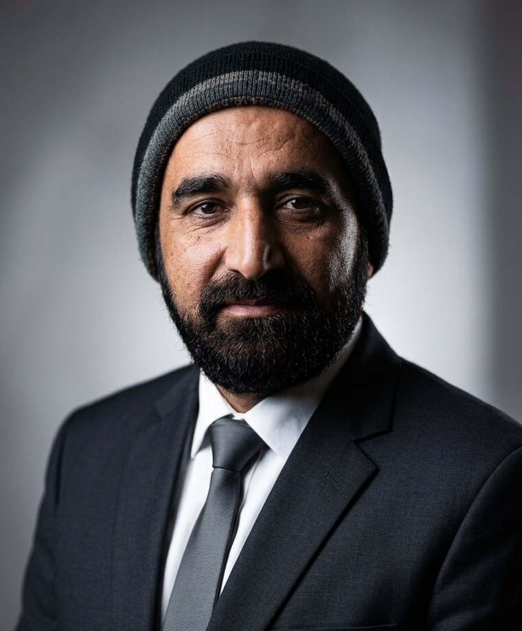
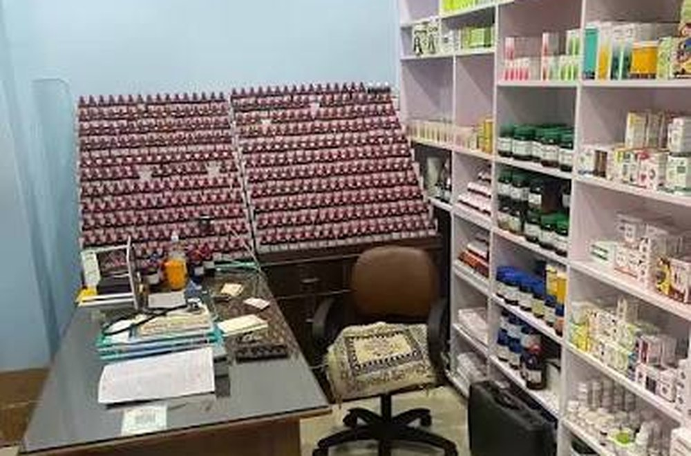

Trust
Built over 35 years, one patient at a time.
About Us
Dr. Raja Akhtar Mehmood has spent more than 35 years serving patients from Banian, Kharian, Gujrat, and nearby villages with careful, affordable homeopathic treatment.

35+ years of clinical experienceDoctor Profile
Dr. Mehmood is the lead physician at Aslam Homoeo Clinic in Village & Post Office Banian, Tehsil Kharian, District Gujrat. His work has grown through years of daily consultations with families, elders, women, children, and patients with long-standing concerns.
His training background is presented as DHMS / Classical Homeopathy. Over decades, his areas of special interest have developed around chronic disease care, kidney stones, female health concerns, emotional health, digestion, allergies, skin conditions, arthritis, and whole-family support.
For Dr. Mehmood, a consultation is not a hurried exchange. It is a careful conversation about the patient’s full history, symptoms, routine, diet, sleep, stress, and emotional state.
“I do not treat diseases. I treat people.”
The Clinic’s Story
The clinic has always belonged to the life of the village. Patients come not only for medicine, but for a doctor who remembers their families, understands local routines, and speaks with patience.
Over the years, people have travelled from neighboring villages, Kharian city, Gujrat, and nearby tehsils because they wanted natural treatment explained in simple words and given with respect.
The clinic continues with the same promise: listen first, prescribe carefully, keep care affordable, and treat every patient with dignity.

Our Values
Built over 35 years, one patient at a time.
Every patient is treated with dignity and patience.
Quality care should not depend on wealth.
Supporting the body, not suppressing it.
What Makes Us Different